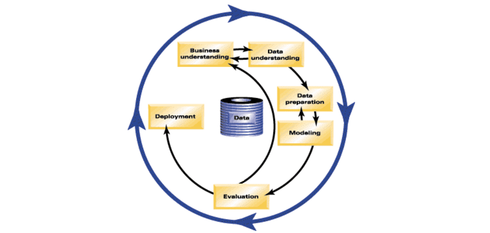

Effort: 15 mins
This course focuses on the Foundational Methodology for Data Science by John Rollins, which was introduced in the previous video. However, it is not the only methodology that you will encounter in data science. For example, in data mining, the Cross Industry Process for Data Mining (CRISP-DM) methodology is widely used.
The CRISP-DM methodology is a process aimed at increasing the use of data mining over a wide variety of business applications and industries. The intent is to take case specific scenarios and general behaviors to make them domain neutral. CRISP-DM is comprised of six steps with an entity that has to implement in order to have a reasonable chance of success. The six steps are shown in the following diagram:

Fig.1 CRISP-DM model, IBM Knowledge Center, CRISP-DM Help Overview
Business Understanding This stage is the most important because this is where the intention of the project is outlined. Foundational Methodology and CRISP-DM are aligned here. It requires communication and clarity. The difficulty here is that stakeholders have different objectives, biases, and modalities of relating information. They don’t all see the same things or in the same manner. Without clear, concise, and complete perspective of what the project goals are resources will be needlessly expended.
Data Understanding Data understanding relies on business understanding. Data is collected at this stage of the process. The understanding of what the business wants and needs will determine what data is collected, from what sources, and by what methods. CRISP-DM combines the stages of Data Requirements, Data Collection, and Data Understanding from the Foundational Methodology outline.
Data Preparation Once the data has been collected, it must be transformed into a useable subset unless it is determined that more data is needed. Once a dataset is chosen, it must then be checked for questionable, missing, or ambiguous cases. Data Preparation is common to CRISP-DM and Foundational Methodology.
Modeling Once prepared for use, the data must be expressed through whatever appropriate models, give meaningful insights, and hopefully new knowledge. This is the purpose of data mining: to create knowledge information that has meaning and utility. The use of models reveals patterns and structures within the data that provide insight into the features of interest. Models are selected on a portion of the data and adjustments are made if necessary. Model selection is an art and science. Both Foundational Methodology and CRISP-DM are required for the subsequent stage.
Evaluation The selected model must be tested. This is usually done by having a pre-selected test, set to run the trained model on. This will allow you to see the effectiveness of the model on a set it sees as new. Results from this are used to determine efficacy of the model and foreshadows its role in the next and final stage.
Deployment In the deployment step, the model is used on new data outside of the scope of the dataset and by new stakeholders. The new interactions at this phase might reveal the new variables and needs for the dataset and model. These new challenges could initiate revision of either business needs and actions, or the model and data, or both.
CRISP-DM is a highly flexible and cyclical model. Flexibility is required at each step along with communication to keep the project on track. At any of the six stages, it may be necessary to revisit an earlier stage and make changes. The key point of this process is that it’s cyclical; therefore, even at the finish you are having another business understanding encounter to discuss the viability after deployment. The journey continues.
For more information on CRISP-DM, go to: IBM Knowledge Center – CRISP-DM Help Overview
| Date | Version | Changed by | Change Description |
|---|---|---|---|
| 2020-10-21 | 2.0 | Malika Singla | Migrated Lab to Markdown and added to course repo in GitLab |